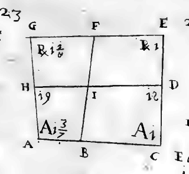

Proposition XX: Twenty Combinatorial Cases of Element V¶



Proposition XX · Problem XI
The figure of the Fifth Element being set forth, and out of the six ratios of which we treated in the same Element, any three being given, to find the remaining two.
This problem has twenty cases; for multiplying 6 by 5 makes 30, from half of which, 15, multiplied by 4 makes 60; the third part of this is 20, namely the number of all triples arising from the number 6.
I. (Tab. 2, Fig. 22) Let the three ratios be given: CD to DE as 12 to 8, EF to FG as 4 to 12, and GH to HA as 8 to 4; we must investigate the remaining three. As was done in the Fifth Element, let us suspend from the angles C, E, G, A the heavy bodies C, E, G, A, so that the weights are reciprocally among themselves as the lengths from which they hang; thus if C weighs as 4, E will weigh as 6, because ED to DC is as 8 to 12, or 4 to 6. By the same ratio, E being as 6, G will be as 2; for GF to FE is as 12 to 4, or 6 to 2; and finally if G be 2, A will be 4; for AH to HG is as 4 to 8, nay as 2 to 4; wherefore C will be 4, E 6, G 2, and A 4; but (inasmuch as it is the figure of the Fifth Element) AB to BC is as weight C 4 to weight A 4; therefore AB to BC will be as 4 to 4, namely of equality; next HI to ID as weight D 10 to weight H 6, that is as 10 to 6; and likewise BI to IF as heavy body F 8 to B 8, namely as 8 to 8, or of equality, and thus we have made known the three remaining ratios AB to BC of equality, just as BI to IF, and HI to ID as 10 to 6, or 5 to 3.
II. III. IV. But if the three given ratios be EF to FG; GH to HA; AB to BC: or GH to HA; AB to BC, and CD to DE: or AB to BC; CD to DE; EF to FG, we shall solve the problem in the same manner as above.
V. Let the three ratios be given: AB to BC as 5 to 6; BI to IF of equality; and GF to FE as 8 to 3; and let it be required to make known the remaining ones. Let us suspend from the angles the heavy bodies C, E, G, A, as the Fifth Element teaches; therefore as AB is to BC, that is as 5 to 6, so is heavy body C to A; if therefore C weighs 5, A will weigh 6. Next, because as FI is to IB, that is as 1 to 1, so is weight B 11 to F, F will also be 11; now GF is to FE as 8 to 3; and by composition GE to FE as 11 to 3, in
f. 0045 · p. 28which proportion is also weight F to G; therefore since F weighs 11, G will weigh 3, and the remaining weight E 8; and so the remaining ones are at once had, that is HI to ID as weight D 13 to weight H 9; and likewise AH to HG as heavy body G 3 to heavy body A 6, and finally CD to DE as heavy body E 8 to heavy body C 5.
But if the three given ratios be the same ones which we have just made known, we shall give the remaining three in the same manner.
VII. Let three ratios be given: GF to FE as 6 to 5, HI to ID as 13 to 9, and FI to IB as 11 to 11, namely of equality; we must investigate the remaining ones as well. Since as GF is to FE, so is weight E to G, and GF to FE is as 6 to 5; if therefore weight E be set as 6, G will be 5; next, because as BI is to IF, nay as 11 to 11, so is weight F to B; and F is 11, therefore B will likewise be 11, wherefore weight I will be 22; now HI is to ID as 13 to 9; therefore by composition HD to DI, that is weight I to H, will be as 22 to 9; and hence since weight I is 22, the heavy body H will be 9; but weight I 22 is equal to the weights H 9 and D, therefore D will be 13; similarly because H 9 is equal to the two weights G 5 and A, and D 13 is equal to the two weights E 6 and C, A will be 4 and C 7; and therefore AB to BC will be as weight C 7 to weight A 4, GH to HA as weight A 4 to weight G 5, and finally ED to DC as weight C 7 to E 6.
VIII. IX. X. But if the three given ratios be AB to BC, HI to ID, BI to IF; or the three CD to DE, BI to IF, and DI to IH; or the three GH to HA, FI to IB, and HI to ID; by the same reasoning we shall satisfy the problem.
XI. Further, let three other ratios be given: GH to HA as 5 to 17, FI to IB as 7 to 16, and GF to FE as 15 to 17; it is required to search out the remaining three.
Because as GH to HA, that is as 5 to 17, so is weight A to G, if heavy body A be 5, heavy body G will be 17. Likewise since EF to FG, that is 17 to 15, is as weight G to E, and weight G is 17, weight E will be 15; and finally, because BI to IF, that is 16 to 7, or 32 to 14, is as weight F to B, and F is 32, B will be 14; but B 14 is the weight of the heavy bodies A 5 and C; therefore C will be 9, and so CD to DE will be as weight E 15 to weight C 9; similarly AB to BC will be as C 9 to A 5; and finally HI to ID will be as D 24 to H 22.
Seven other cases similar to the aforesaid are solved in the same manner.
XIX. (Tab. 2, Fig. 23) Let the ratios be given: GF to FE as 8 to 9, HI to ID as 15 to 19, and AB to BC as 7 to 10. Care must be taken, however, if the three GE, HD, AC be parallel, that the other three GA, FB, EC be not equidistant.
We shall solve this case algebraically by second roots in this manner.
Since as GF to FE, so weight E to G, if E be put as ℞ 1, G will be ℞ 1 1/8. Likewise because AB to BC is as weight C to A, if we will that C weigh A 1, A will weigh A 1 3/7, and because HI to ID is as weight D to H, and D is set as 15, H will be as 19; but since 19, namely weight H, is equal to the two weights G, A, that is ℞ 1 1/8 ✠ A 1 3/7; and D is equal to the two C, E, that is 15, namely ℞ 1 ✠ 1 A; it will be as 19 to 15, so ℞ 1 1/8 ✠ A 1 3/7 to ℞ 1 ✠ 1 A; wherefore the product of the means will be equal to that of the extremes, namely ℞ 19 ✠ 19 A will be equal to ℞ 16 7/8 ✠ A 21 3/7; and subtracting ℞ 16 7/8 ✠ 19 A in common, there will remain an equation between ℞ 2 1/8 and A 2 3/7; and if it be made as A 2 3/7 to ℞ 2 1/8, so A 1 to another number, there will come out ℞ 119/136, the value of one A, and therefore ℞ 1 119/136, that is ℞ 255/136, will be equal to the absolute number 15, namely the aggregate of the two heavy bodies C, E, that is ℞ 1 ✠ A 1. Dividing therefore 15 by the fraction 255/136, there comes out the absolute number 2040/255, that is 8, the value of one root, and therefore heavy body E, which was put as ℞ 1, will be 8; and G will be 9. Next, because (as we said above) weight D equals the two E, C, that is 15, E will be 8 and C 7, wherefore A 1 is 7; therefore A, namely A 1 3/7, will be 10: which being so, GH to HA will be as weight A 10 to weight G 9; CD to DE as weight E 8 to weight C 7; and finally FI to IB as B 17 to weight F 17, which &c.
XX. Lastly. If the given ratios be GH to HA, FI to IB, and ED to DC, the figure being supposed as has been said, this case will be similar to the preceding XIX., and so we shall disclose the remaining three by a like artifice.